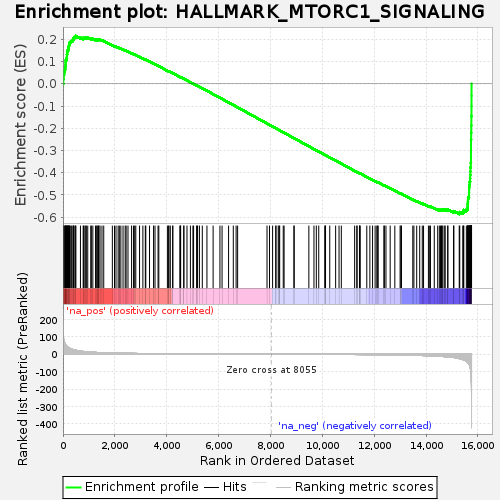
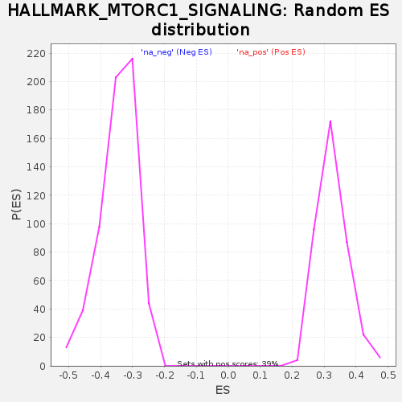

| | | Dataset | DiseaseStatus_ctr_vs_case |
| Phenotype | NoPhenotypeAvailable |
| Upregulated in class | na_neg |
| GeneSet | HALLMARK_MTORC1_SIGNALING |
| Enrichment Score (ES) | -0.58642745 |
| Normalized Enrichment Score (NES) | -1.7034688 |
| Nominal p-value | 0.0 |
| FDR q-value | 0.014114284 |
| FWER p-Value | 0.064 |
Table: GSEA Results Summary

Fig 1: Enrichment plot: HALLMARK_MTORC1_SIGNALING
Profile of the Running ES Score & Positions of GeneSet Members on the Rank Ordered List
| SYMBOL | RANK IN GENE LIST | RANK METRIC SCORE | RUNNING ES | CORE ENRICHMENT | | 1 | PSMC4 | 14 | 110.803 | 0.0214 | No |
| 2 | GLA | 24 | 92.180 | 0.0394 | No |
| 3 | SLC6A6 | 42 | 75.727 | 0.0536 | No |
| 4 | PSMD13 | 69 | 64.785 | 0.0650 | No |
| 5 | SQSTM1 | 91 | 56.704 | 0.0751 | No |
| 6 | PSMD14 | 96 | 55.539 | 0.0860 | No |
| 7 | PSMC2 | 100 | 54.206 | 0.0968 | No |
| 8 | GAPDH | 105 | 53.230 | 0.1073 | No |
| 9 | MLLT11 | 137 | 47.574 | 0.1149 | No |
| 10 | TUBA4A | 150 | 45.166 | 0.1232 | No |
| 11 | PSMB5 | 152 | 44.881 | 0.1322 | No |
| 12 | PSMC6 | 164 | 42.759 | 0.1401 | No |
| 13 | NMT1 | 165 | 42.667 | 0.1487 | No |
| 14 | PSMD12 | 199 | 38.905 | 0.1544 | No |
| 15 | BTG2 | 207 | 38.204 | 0.1617 | No |
| 16 | MAP2K3 | 220 | 37.344 | 0.1684 | No |
| 17 | SYTL2 | 232 | 36.199 | 0.1750 | No |
| 18 | PSMA4 | 252 | 34.727 | 0.1808 | No |
| 19 | PSMA3 | 259 | 34.014 | 0.1873 | No |
| 20 | SLA | 300 | 31.553 | 0.1911 | No |
| 21 | NUP205 | 334 | 29.532 | 0.1949 | No |
| 22 | PLOD2 | 381 | 27.179 | 0.1974 | No |
| 23 | ENO1 | 404 | 26.073 | 0.2013 | No |
| 24 | GSR | 407 | 25.901 | 0.2064 | No |
| 25 | DDX39A | 431 | 25.153 | 0.2100 | No |
| 26 | TBK1 | 489 | 23.018 | 0.2109 | No |
| 27 | ABCF2 | 492 | 22.968 | 0.2154 | No |
| 28 | PSME3 | 673 | 17.964 | 0.2075 | No |
| 29 | TXNRD1 | 783 | 15.668 | 0.2036 | No |
| 30 | TOMM40 | 784 | 15.656 | 0.2068 | No |
| 31 | PRDX1 | 842 | 14.859 | 0.2061 | No |
| 32 | GLRX | 879 | 14.313 | 0.2067 | No |
| 33 | CCT6A | 898 | 14.063 | 0.2084 | No |
| 34 | ATP2A2 | 954 | 13.430 | 0.2076 | No |
| 35 | SLC2A1 | 1071 | 12.129 | 0.2025 | No |
| 36 | PNO1 | 1093 | 11.919 | 0.2036 | No |
| 37 | GCLC | 1151 | 11.361 | 0.2022 | No |
| 38 | ALDOA | 1255 | 10.402 | 0.1977 | No |
| 39 | GPI | 1282 | 10.151 | 0.1981 | No |
| 40 | CDC25A | 1318 | 9.809 | 0.1978 | No |
| 41 | PDAP1 | 1345 | 9.654 | 0.1981 | No |
| 42 | FGL2 | 1374 | 9.450 | 0.1982 | No |
| 43 | PPA1 | 1379 | 9.439 | 0.1998 | No |
| 44 | HMBS | 1428 | 9.081 | 0.1986 | No |
| 45 | PLK1 | 1503 | 8.675 | 0.1956 | No |
| 46 | ME1 | 1571 | 8.318 | 0.1930 | No |
| 47 | BUB1 | 1903 | 6.884 | 0.1731 | No |
| 48 | RRM2 | 1986 | 6.594 | 0.1691 | No |
| 49 | HSPA4 | 2044 | 6.365 | 0.1667 | No |
| 50 | STIP1 | 2126 | 6.068 | 0.1628 | No |
| 51 | SORD | 2172 | 5.925 | 0.1611 | No |
| 52 | ELOVL6 | 2231 | 5.737 | 0.1585 | No |
| 53 | MCM2 | 2315 | 5.504 | 0.1543 | No |
| 54 | HSP90B1 | 2397 | 5.293 | 0.1501 | No |
| 55 | SLC9A3R1 | 2434 | 5.217 | 0.1489 | No |
| 56 | ACTR3 | 2506 | 5.034 | 0.1453 | No |
| 57 | ADD3 | 2645 | 4.704 | 0.1374 | No |
| 58 | PGK1 | 2720 | 4.535 | 0.1336 | No |
| 59 | NFYC | 2765 | 4.404 | 0.1316 | No |
| 60 | IMMT | 2807 | 4.310 | 0.1299 | No |
| 61 | CTH | 2952 | 4.024 | 0.1214 | No |
| 62 | MCM4 | 3080 | 3.739 | 0.1140 | No |
| 63 | RRP9 | 3174 | 3.563 | 0.1088 | No |
| 64 | CALR | 3193 | 3.534 | 0.1083 | No |
| 65 | COPS5 | 3337 | 3.298 | 0.0998 | No |
| 66 | GTF2H1 | 3492 | 3.078 | 0.0905 | No |
| 67 | GMPS | 3548 | 2.982 | 0.0876 | No |
| 68 | LDHA | 3666 | 2.820 | 0.0806 | No |
| 69 | AK4 | 3695 | 2.784 | 0.0794 | No |
| 70 | AURKA | 4026 | 2.355 | 0.0587 | No |
| 71 | SLC7A5 | 4075 | 2.290 | 0.0560 | No |
| 72 | GBE1 | 4083 | 2.284 | 0.0560 | No |
| 73 | PNP | 4138 | 2.228 | 0.0530 | No |
| 74 | POLR3G | 4230 | 2.127 | 0.0476 | No |
| 75 | UNG | 4235 | 2.122 | 0.0478 | No |
| 76 | LGMN | 4506 | 1.833 | 0.0308 | No |
| 77 | MTHFD2L | 4529 | 1.814 | 0.0297 | No |
| 78 | NUFIP1 | 4537 | 1.808 | 0.0297 | No |
| 79 | HK2 | 4657 | 1.713 | 0.0224 | No |
| 80 | ETF1 | 4662 | 1.709 | 0.0224 | No |
| 81 | TUBG1 | 4781 | 1.602 | 0.0152 | No |
| 82 | PITPNB | 4913 | 1.498 | 0.0071 | No |
| 83 | UCHL5 | 5011 | 1.412 | 0.0011 | No |
| 84 | ACTR2 | 5036 | 1.396 | -0.0001 | No |
| 85 | UBE2D3 | 5155 | 1.316 | -0.0075 | No |
| 86 | NFIL3 | 5166 | 1.307 | -0.0078 | No |
| 87 | ATP5G1 | 5190 | 1.294 | -0.0091 | No |
| 88 | YKT6 | 5261 | 1.242 | -0.0133 | No |
| 89 | DHFR | 5372 | 1.161 | -0.0201 | No |
| 90 | EEF1E1 | 5551 | 1.033 | -0.0314 | No |
| 91 | CORO1A | 5789 | 0.885 | -0.0464 | No |
| 92 | CCNF | 6052 | 0.751 | -0.0631 | No |
| 93 | HSPD1 | 6134 | 0.706 | -0.0682 | No |
| 94 | EGLN3 | 6385 | 0.586 | -0.0841 | No |
| 95 | HSPA9 | 6567 | 0.495 | -0.0956 | No |
| 96 | ATP6V1D | 6676 | 0.454 | -0.1025 | No |
| 97 | PIK3R3 | 6734 | 0.435 | -0.1061 | No |
| 98 | RPN1 | 7868 | 0.040 | -0.1789 | No |
| 99 | TES | 7964 | 0.018 | -0.1850 | No |
| 100 | HSPA5 | 8083 | -0.009 | -0.1926 | No |
| 101 | RAB1A | 8204 | -0.054 | -0.2003 | No |
| 102 | NFKBIB | 8214 | -0.060 | -0.2008 | No |
| 103 | SLC1A5 | 8300 | -0.096 | -0.2063 | No |
| 104 | QDPR | 8333 | -0.106 | -0.2083 | No |
| 105 | HSPE1 | 8356 | -0.116 | -0.2097 | No |
| 106 | GSK3B | 8493 | -0.158 | -0.2184 | No |
| 107 | USO1 | 8526 | -0.171 | -0.2204 | No |
| 108 | RPA1 | 8905 | -0.313 | -0.2447 | No |
| 109 | CD9 | 8915 | -0.316 | -0.2452 | No |
| 110 | DDIT4 | 9481 | -0.555 | -0.2814 | No |
| 111 | CFP | 9678 | -0.651 | -0.2938 | No |
| 112 | RDH11 | 9769 | -0.700 | -0.2995 | No |
| 113 | PFKL | 9862 | -0.746 | -0.3052 | No |
| 114 | SLC37A4 | 10093 | -0.883 | -0.3198 | No |
| 115 | LTA4H | 10122 | -0.903 | -0.3215 | No |
| 116 | GGA2 | 10124 | -0.904 | -0.3213 | No |
| 117 | TPI1 | 10287 | -0.999 | -0.3315 | No |
| 118 | SDF2L1 | 10514 | -1.154 | -0.3458 | No |
| 119 | WARS | 10645 | -1.237 | -0.3539 | No |
| 120 | EPRS | 10733 | -1.297 | -0.3593 | No |
| 121 | SLC7A11 | 11247 | -1.769 | -0.3919 | No |
| 122 | DAPP1 | 11332 | -1.849 | -0.3969 | No |
| 123 | XBP1 | 11340 | -1.864 | -0.3970 | No |
| 124 | SLC1A4 | 11433 | -1.936 | -0.4025 | No |
| 125 | IFI30 | 11436 | -1.942 | -0.4022 | No |
| 126 | PSMG1 | 11463 | -1.964 | -0.4035 | No |
| 127 | CANX | 11715 | -2.231 | -0.4192 | No |
| 128 | HPRT1 | 11834 | -2.373 | -0.4263 | No |
| 129 | PDK1 | 11938 | -2.500 | -0.4324 | No |
| 130 | ITGB2 | 12036 | -2.646 | -0.4381 | No |
| 131 | BCAT1 | 12101 | -2.741 | -0.4417 | No |
| 132 | G6PD | 12135 | -2.799 | -0.4432 | No |
| 133 | SERPINH1 | 12153 | -2.839 | -0.4437 | No |
| 134 | SKAP2 | 12374 | -3.200 | -0.4572 | No |
| 135 | TFRC | 12393 | -3.239 | -0.4577 | No |
| 136 | SRD5A1 | 12454 | -3.365 | -0.4609 | No |
| 137 | FDXR | 12617 | -3.698 | -0.4706 | No |
| 138 | PPP1R15A | 12796 | -4.045 | -0.4812 | No |
| 139 | CXCR4 | 13000 | -4.561 | -0.4933 | No |
| 140 | NAMPT | 13030 | -4.615 | -0.4943 | No |
| 141 | PPIA | 13054 | -4.683 | -0.4948 | No |
| 142 | ARPC5L | 13489 | -5.934 | -0.5215 | No |
| 143 | P4HA1 | 13532 | -6.074 | -0.5230 | No |
| 144 | CYB5B | 13640 | -6.516 | -0.5285 | No |
| 145 | EDEM1 | 13756 | -6.984 | -0.5345 | No |
| 146 | M6PR | 13855 | -7.500 | -0.5393 | No |
| 147 | CTSC | 13904 | -7.764 | -0.5408 | No |
| 148 | CACYBP | 14092 | -8.698 | -0.5511 | No |
| 149 | UFM1 | 14141 | -9.078 | -0.5523 | No |
| 150 | EIF2S2 | 14170 | -9.181 | -0.5523 | No |
| 151 | SLC2A3 | 14317 | -10.220 | -0.5596 | No |
| 152 | FAM129A | 14450 | -11.194 | -0.5658 | No |
| 153 | SSR1 | 14513 | -11.734 | -0.5675 | No |
| 154 | IFRD1 | 14559 | -12.167 | -0.5679 | No |
| 155 | PGM1 | 14596 | -12.492 | -0.5677 | No |
| 156 | DDIT3 | 14621 | -12.687 | -0.5667 | No |
| 157 | SERP1 | 14652 | -13.030 | -0.5660 | No |
| 158 | FKBP2 | 14724 | -13.946 | -0.5677 | No |
| 159 | RIT1 | 14733 | -14.070 | -0.5654 | No |
| 160 | MTHFD2 | 14837 | -15.368 | -0.5689 | No |
| 161 | SEC11A | 14841 | -15.399 | -0.5660 | No |
| 162 | ADIPOR2 | 15060 | -18.684 | -0.5762 | No |
| 163 | TCEA1 | 15074 | -18.990 | -0.5733 | No |
| 164 | ERO1L | 15280 | -24.988 | -0.5814 | Yes |
| 165 | ACLY | 15300 | -25.803 | -0.5774 | Yes |
| 166 | EBP | 15416 | -30.695 | -0.5786 | Yes |
| 167 | ACSL3 | 15449 | -32.424 | -0.5741 | Yes |
| 168 | TRIB3 | 15453 | -32.580 | -0.5678 | Yes |
| 169 | BHLHE40 | 15555 | -40.039 | -0.5662 | Yes |
| 170 | SHMT2 | 15597 | -46.102 | -0.5595 | Yes |
| 171 | ASNS | 15604 | -47.277 | -0.5504 | Yes |
| 172 | CDKN1A | 15606 | -47.520 | -0.5408 | Yes |
| 173 | TMEM97 | 15614 | -49.074 | -0.5314 | Yes |
| 174 | ACACA | 15619 | -49.830 | -0.5216 | Yes |
| 175 | ELOVL5 | 15623 | -50.646 | -0.5116 | Yes |
| 176 | DHCR24 | 15657 | -58.583 | -0.5019 | Yes |
| 177 | PHGDH | 15659 | -58.977 | -0.4901 | Yes |
| 178 | CCNG1 | 15661 | -59.089 | -0.4782 | Yes |
| 179 | VLDLR | 15662 | -59.106 | -0.4663 | Yes |
| 180 | PSAT1 | 15673 | -63.008 | -0.4542 | Yes |
| 181 | PSPH | 15685 | -68.360 | -0.4412 | Yes |
| 182 | TM7SF2 | 15700 | -75.733 | -0.4268 | Yes |
| 183 | GOT1 | 15703 | -77.186 | -0.4114 | Yes |
| 184 | FADS2 | 15710 | -85.827 | -0.3944 | Yes |
| 185 | HMGCR | 15713 | -91.706 | -0.3761 | Yes |
| 186 | FADS1 | 15726 | -103.860 | -0.3559 | Yes |
| 187 | DHCR7 | 15732 | -124.863 | -0.3311 | Yes |
| 188 | SQLE | 15733 | -129.290 | -0.3050 | Yes |
| 189 | HMGCS1 | 15734 | -131.847 | -0.2784 | Yes |
| 190 | IDH1 | 15735 | -133.567 | -0.2515 | Yes |
| 191 | LDLR | 15740 | -154.868 | -0.2205 | Yes |
| 192 | IDI1 | 15744 | -163.155 | -0.1878 | Yes |
| 193 | CYP51A1 | 15748 | -204.936 | -0.1467 | Yes |
| 194 | SCD | 15753 | -226.554 | -0.1012 | Yes |
| 195 | STARD4 | 15754 | -239.002 | -0.0531 | Yes |
| 196 | INSIG1 | 15755 | -263.451 | 0.0001 | Yes |
Table: GSEA details [plain text format]

Fig 2: HALLMARK_MTORC1_SIGNALING: Random ES distribution
Gene set null distribution of ES for HALLMARK_MTORC1_SIGNALING